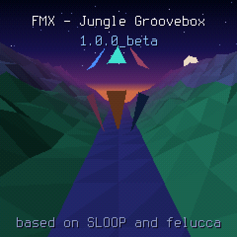
FMX
Jungle / breakcore groovebox firmware for the M-VAVE FM-1
User Manual · firmware 1.0.0 beta
FMX is free software under GPL-3.0, with no warranty. It is based on SLOOP by isod89 and Felucca by Leo Kuroshita (Hügelton Instruments); the BREAK generator follows X0X by charlesvestal. M-VAVE and FM-1 are trademarks of their owners; FMX is not affiliated with or endorsed by them.
Screens in this manual are rendered from the firmware's own drawing code. Manual written October 2026.
FMX turns the FM-1 into a four-track jungle and breakcore machine you can plug into a PA and play a whole set on. Each track has its own generator, so the music writes itself while your hands shape it: you pick sections, mute and bring in tracks, throw effects, and move from song to song without stopping.
The firmware has two modes:
A song is up to four songs in a set. Each song is built from one loop and played as a full arrangement: INTRO, BUILD, DROP, ROLL, BREAKDOWN, DROP 2, OUTRO.
Everything off the device happens in the FMX Companion, a web app. Connecting the FM-1 needs Web MIDI: Chrome, Edge or Firefox on a computer, or Chrome on Android. On Safari and iPhone the emulator and your sound library still work, but you cannot connect the FM-1.
Your songs and sounds stay on the FM-1 through updates.
To come back, install FMX again and restore your set.
Hold OCT− while you switch the FM-1 on. It starts in USB rescue, and you can install again from the companion app.
| Control | What it is |
|---|---|
| 16 white keys | The main keys. Their job depends on the screen: sections and moves in LIVE, steps or notes in STUDIO, effects in the FX panel. |
| Black keys | "The hands": they play the track in focus (break slices, bass notes, chords, chop hits; in LIVE, CHOP's black 1–3 pick its mode) or pick tracks in the FX panel. |
| KNOB 1–4 | Always the four values drawn at the bottom of the screen. |
| SELECT | Tempo in LIVE; turns the pages of a screen in STUDIO. |
| ALGORITHM | Picks the track in focus (in SONG: the section). |
| PRESETS | The focus track's sound (on the BREAK: its loop A). |
| MASTER | Output level, after the limiter. |
| HOME | Tap: up to the top of the mode, then LIVE ↔ STUDIO. Hold: the system menu. |
| PLAY | Start / stop. Works on every screen, even in the menu. In LIVE it plays the song; in STUDIO, the loop you are making. |
| OCT− / OCT+ | In LIVE: pick the next song. In STUDIO: octave, and on some screens mute / next page; on CHOP they walk the mode tabs. |
| FX, ENV, LFO, SEL, EDIT, GLO, SAVE, ARP, SEQ, REC | Function buttons. Tapped, they open pages; held, many become a layer that changes what the keys and knobs do (see chapter 14). FX held always opens the FX panel. |
Colours are consistent everywhere: BREAK orange, BASS blue, CHORDS teal, CHOP pink. Yellow always means waiting: a choice that will happen on the next bar or phrase.
Every main screen has a hint line at the bottom that tells you what its buttons do. When in doubt, read the last line.
In LIVE most changes wait for a musical boundary so they always land in time. GLO in LIVE steps Q through NOW, BAR and 4 BARS. While a change waits, it is shown in yellow at once, and you can keep scrolling; only your last choice is applied, once, on the boundary. EDIT in LIVE clears everything that is waiting.
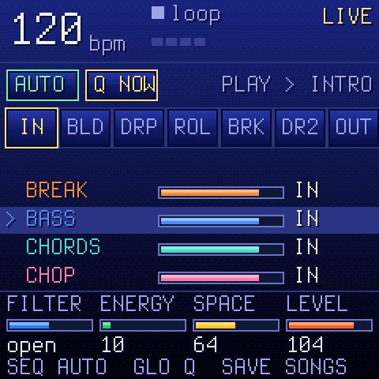
LIVE has one screen and one control map that never changes. From the top:
| Key | Does |
|---|---|
| 1–7 | Sections: INTRO, BUILD, DROP, ROLL, BREAKDOWN, DROP 2, OUTRO. Tap to ask for one; it starts on the next phrase (Q). Stopped: a tap arms it (lit, silent) and PLAY starts from its first bar. |
| 8 | NEXT SONG: the way to the next song. Each tap steps BRIDGE → SWAP → CUT → none (see chapter 7). |
| 9–12 | Tracks BREAK, BASS, CHORDS, CHOP in / out, on the bar. |
| 13 (hold) | GAP: the BREAK drops out while held. |
| 14 (hold) | WASH: the mix washes into the echo and reverb. |
| 15 (hold) | ROLL: the break rolls. |
| 16 (hold) | REWIND: on release, the section restarts from its first bar. Tap a section key (1–7) while holding it and the rewind lands in that section instead, on the next bar, from its first bar. |
Moves (13–16) last only while held; let go and everything is as it was.
They play the track in focus (chosen with ALGORITHM): on the BREAK, black keys 1–4 hold loop A–D at once (whatever Q), the rest play its slices; on CHOP black keys 1–3 switch its mode at once (PADS, SLICE, INST), the rest play its kit's hits or notes; on BASS and CHORDS they play notes.
| KNOB 1 FILTER | The master DJ filter: left low-pass, right high-pass, centre open. |
| KNOB 2 ENERGY | The BREAK's MANGLE: how much the generator cuts, rolls and rearranges. |
| KNOB 3 SPACE | The amount of reverb. |
| KNOB 4 LEVEL | The level of the track in focus. |
| SELECT | Tempo. |
| ALGORITHM | The track in focus. |
| PRESETS | The focus track's sound (on the BREAK: loop A), applied on Q. |
| SEQ | AUTO ↔ MAN. AUTO: the song runs through its chain. MAN: the section loops until you choose another. Switching never changes what plays now. |
| GLO | Q: NOW, BAR, 4 BARS. |
| EDIT | Clear everything waiting (sections, the next-song way, queued mutes). |
| SEL | Open the focus track's screen in STUDIO; HOME brings you back to LIVE. |
| SAVE | Open the song SET page (load, save, new); HOME back to LIVE. |
| ENV | The show: a full-screen DRUMMER animation. Keys and knobs stay LIVE's. ENV again closes it. |
| FX (hold) | The FX panel (chapter 8). |
| OCT− / OCT+ | The next song (chapter 7). |
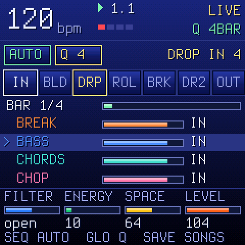
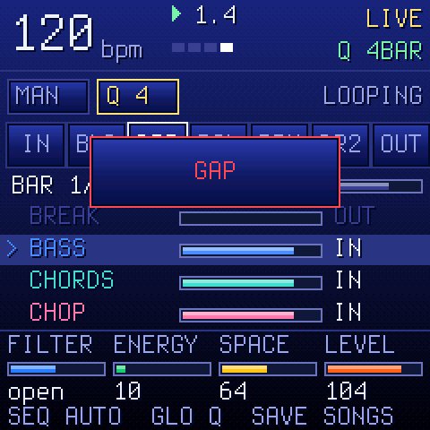
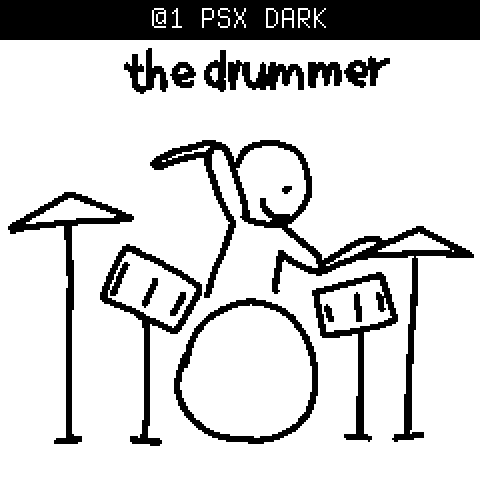
A set is the four song slots. Only one song is in the FM-1 at a time; the BREAK keeps playing across the change, so it carries every transition.
| Way | The old song | The new song enters at |
|---|---|---|
| AUTO (end of song) | Its OUTRO becomes the bridge | BUILD |
| BRIDGE | 8 bars of bridge | BUILD |
| SWAP | Jumps to its BREAKDOWN (8 bars) | DROP |
| CUT | Stops on the phrase | DROP, tempo changes at once |
Each tap of key 8 shows the choice at once in yellow; only the last one fires, on the next 8-bar phrase. none or EDIT cancels a way that is still waiting. Once a bridge starts it plays out, and section keys, key 8 and OCT do nothing until it lands. A choice is for one change only.
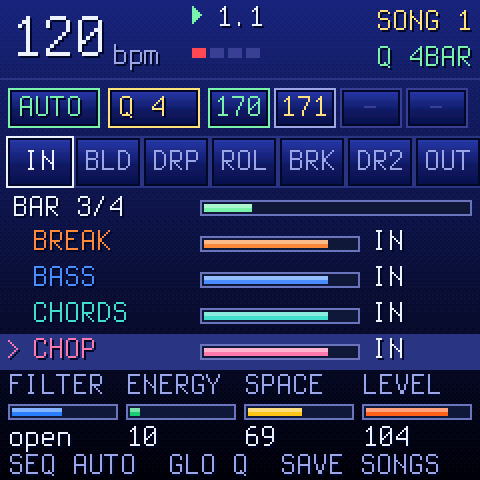
On the last song, AUTO's OUTRO fades to silence and the transport stops; the set does not loop. Key 8 on the last song goes round to song 1 if you ask for it. In ENDLESS mode AUTO stays on the song; only key 8 moves on.
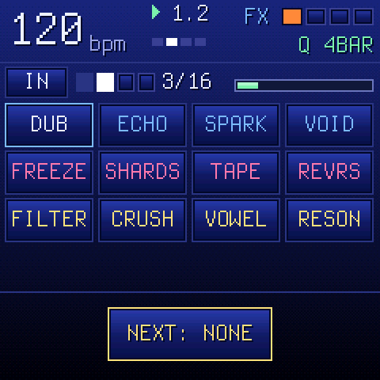
Hold FX on any screen, in LIVE or STUDIO. The panel opens; let go of FX and it closes. Stuck effects keep playing after it closes.
Lock it open: hold FX, tap HOME, let go of FX. Tap HOME or FX (or any other button but PLAY and OCT) to close it.
The strip under the header shows the section, the four beats (the downbeat red), the bar of the section, and a gauge. In the section's last bar the count turns yellow and names the next section (e.g. > DRP): time a throw into the change.
| Row | Keys | Effects |
|---|---|---|
| SPACE | 1–4 | DUB VERB (thrown into a dark, spring-like reverb) · ECHO throw (TIME sets the division, FEEDBACK the repeats) · SPARKLE (octave-up shimmer into the reverb) · VOID (dry out, only the reverb blooms; on release the dry returns on the next beat) |
| TIME | 5–8 | FREEZE (a short window held as a cloud) · SHARDS (the next beat cut into 1/32 shards, shuffled and pitched) · TAPE (wow and flutter; held past a beat it slows to a stop) · REVERSE (each stretch played backwards). One TIME effect at a time. |
| COLOUR | 9–12 | DUB FILTER (resonant low-pass closes over a beat) · PSX CRUSH (fewer samples and bits) · VOWEL (formants gliding a-e-i-o-u) · RESONATOR (comb tuned to the song's root) |
| RHYTHM | 13–16 | Not in this version. |
| White 1–12 | The effect, for as long as the key is held. |
| Black 1–4 | Pick the tracks the effect goes to: BREAK, BASS, CHORDS, CHOP. Hold one or more, then press an effect. With none held, it goes to all four. The four squares in the header show the targets. |
| Black 5 LATCH | Three ways, a tap each: OFF (everything is held) → TRACKS (one padlock: tapped tracks stick) → TRACKS + FX (two padlocks: a tapped effect sticks, tap again to stop it). Stuck effects show a yellow outline. |
| Black 6 CLEAR | Stop every stuck effect, cut the echo and reverb tails, release stuck tracks and LATCH. |
| KNOB 1–4 | AMOUNT, TIME, TONE, FEEDBACK. |
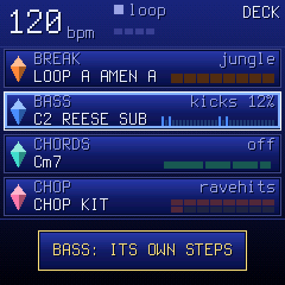
Tap HOME on LIVE's main screen to enter STUDIO. Its top level is the DECK: one window per track, showing what it does right now.
A muted track greys out and says MUTE. A track armed for recording has a red frame.
| ALGORITHM | Select a track (top to bottom). |
| SEL | Open the selected track's screen. |
| PRESETS | Its sound. |
| KNOB 1–4 | Macros: FILTER (master DJ filter), MANGLE (the BREAK's), BASS (rewrites the bass phrase's MOVE), SPACE (reverb). |
| SAVE | The SONG screen (chapter 16). |
| HOME | Back to LIVE. |
On each track's screen, HOME (or ALGORITHM) goes back to the DECK; SELECT turns its pages; PRESETS changes its sound; PLAY starts and stops the loop.
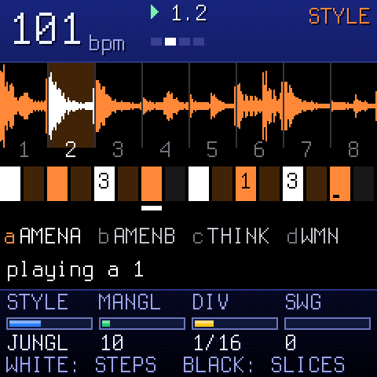
The BREAK plays a break loop cut into 8 slices. A generator decides, step by step, which slice plays, with rolls, stutters and fills according to its STYLE. You can let it run, or take steps over by hand.
Styles: STRAIGHT, ROLLER, JUNGLE, HALFTIME, BRKCORE, CHAOS.
Up to four loops (A–D) per song. The built-in set has 14 breaks; you can add your own from the companion app.
| White keys | The 16 steps: press to let the break play there, again to silence it. |
| Black 1–8 | Hold that slice (let go: the generator takes over). With REC on and playing, it is recorded into the step. |
| Black 9 / 10 / 11 | Reverse / half speed / stutter, while held. |
| White held + black 1–8 | Pin that slice to the step (press the same black key again to give it back to the generator). |
| White held + black 9 | The step plays backwards (again: forwards). |
| White held + KNOB 1–4 | The step's SLICE, LEVEL, RETRIG (×2–×8), PITCH. |
| PRESETS | Loop A. OCT− mutes the BREAK; OCT+ shows the next 16 steps of a longer pattern. |
| SEQ | STYLE: STYLE, MANGLE, DIV, SWING · again GROOVE: CMPLX, ANCHOR, ROLL, FILL |
| EDIT | LOOPS (loop A–D) → BARS → LAYER (a second break under every slice: L MIX, L PTCH) |
| ARP | RETRIG: the chance per bar of a 2×/3×/4×/8× stutter |
| SEL | PHRASE: when loops B, C, D take over |
| ENV | TUNE: pitch, length, drive, filter |
| GLO | MIX: level, pan, reverb and delay send |
| LFO | PATTERN: steps, DIV, swing, interpolation (LIN, or PSX: the PlayStation's softer sound) |
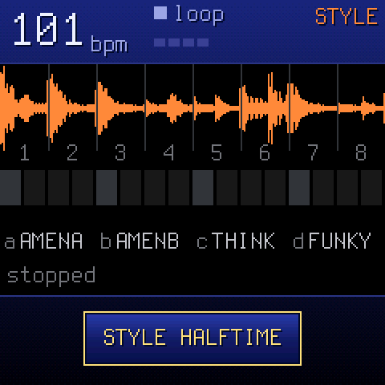
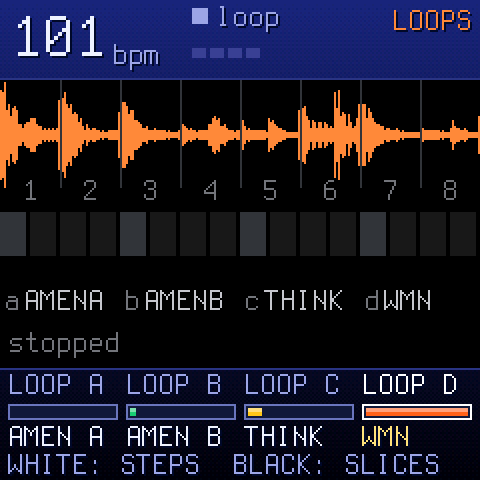
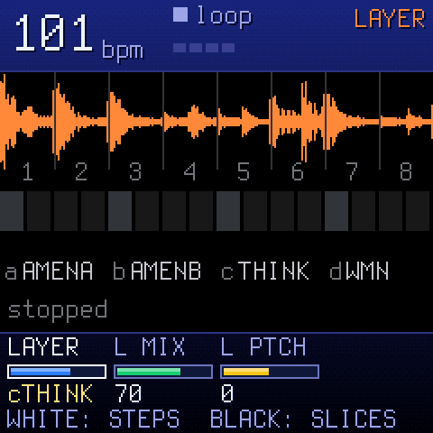
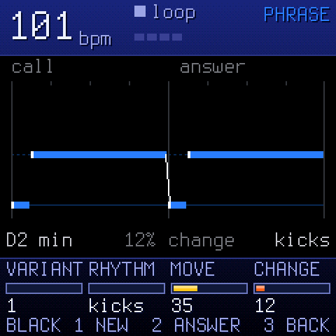
The BASS writes a two-bar phrase in the song's key: bar 1 is the call, bar 2 the answer. Notes are drawn as a roll; slides are drawn into the next note. With RHYTHM on KICKS, the bass follows the break's kicks.
Sounds (PRESETS) are reese and sub basses tuned to the jungle register (E1–D#2).
| Black 1 NEW | A new variant of the phrase. |
| Black 2 ANSWER | Another answer to the same call. |
| Black 3 BACK | The phrase as it was written, your changes since undone. |
| White keys | Play the bass. |
| SEL / SELECT | PHRASE: VARIANT, RHYTHM (KICKS, HALF, ROLLER, DUB, STEPPER), MOVE, CHANGE · SHAPE: ANSWER, HOLD, OCT, BASS FOLLOW (the bass follows the chords' roots). |
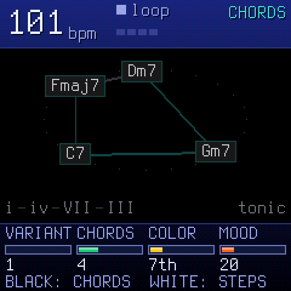
The progression is drawn as bubbles on a ring, in the order they play; the one playing is lit. Under it, the degrees (i – VII – III …).
Sounds are pads, keys and organs.
| Black 1–8 | The nodes (chords). Held, that chord plays over the progression. |
| Black held + KNOB 1 | Pin that chord: VARIANT changes the others. Black held + OCT− unpins it. |
| White keys | The first 16 steps of the track (PLAY = steps: each step strikes the current chord). |
| SEL / SELECT | GEN: VARIANT, CHORDS, COLOR, MOOD · PLAY: PLAY, RATE, FEEL, REG (register). |
The CHOP track has three modes, shown as tabs. OCT- / OCT+ walk the tabs while the mode playing goes on; SEL plays the tab you see (no cut while you look); HOME leaves. On a tab that isn't playing you set its sound to come (KNOB 1 or PRESETS) and its own settings. SELECT shows the mode's page, STEPS or TIME. PRESETS lists only that mode's sounds.
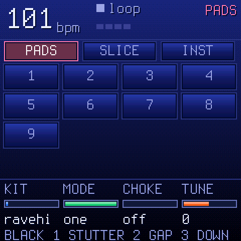
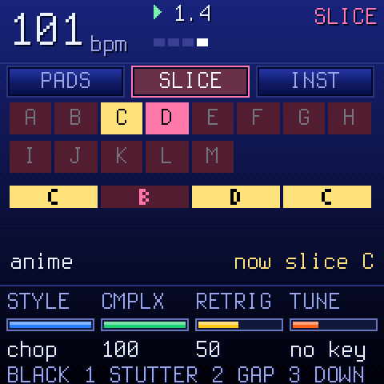
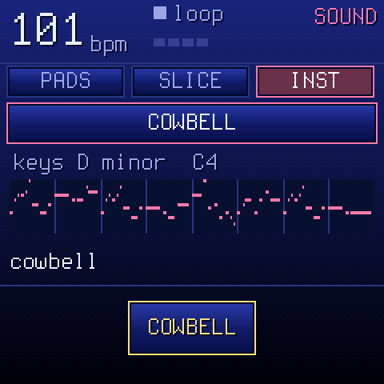
| Mode | Keys | Knobs |
|---|---|---|
| PADS | White keys: a hit each. | KIT, MODE (ONE: hits play out · GATE: stop on release), CHOKE (a hit cuts the previous), TUNE |
| SLICE | White keys: a slice each (held: it plays on every trigger). The loop plays on the BREAK's generator and answers the break. | STYLE (STRAIGHT, HOLD, SKIP, ENDS, HALF, CHOP), CMPLX, RETRIG, TUNE (OFF, KEY, SNAP, FOLLOW) |
| INST | White keys: the song's scale from C4 (in the octave OCT set on another screen; here OCT walks the tabs). Black 4: NEW theme. | SOUND, MELODY (OFF, MIDI, ARP, SING), THEME (MIDI: which tune), CHOKE |
| STEPS | What REC recorded, 16 steps. | LENGTH (1/2/4 bars), RATE (this mode's), SWING |
| TIME | Each mode's speed on its own: the steps' grid, the SLICE loop's speed, the INST theme's. | PADS, SLICE, INST RATE (1/4, 1/8, 1/16, 1/32), OCTAVE (INST's theme, -2..+2) |
Black keys held in every mode: 1 STUTTER, 2 GAP, 3 DOWN. REC records what you play into the CHOP; holding REC clears the track.
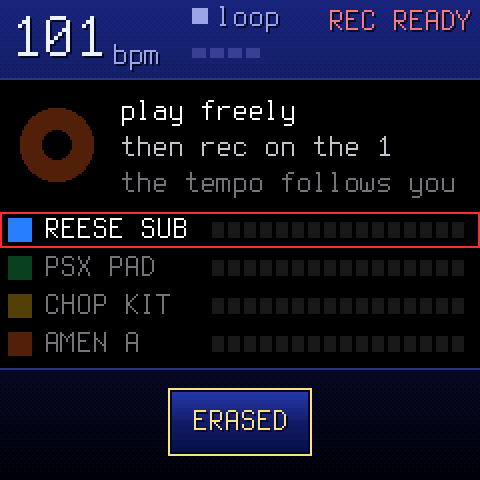
REC arms recording on the selected track (or records at once while playing). The REC screen has three dials: MODE (free: the tempo follows your playing; tempo: the tempo you set), LENGTH (1, 2 or 4 bars) and START (your first note, or a one-bar count-in after PLAY).
Hold REC to clear the track: a ring fills; let go early and nothing is cleared. Undo brings it back.
On a synth track in STUDIO, holding a function button turns the keys and knobs into a layer; the screen shows how.
| SEQ held | The 16 steps. A step held: KNOB 1–4 = note, level, ratchet, nudge; PRESETS adds a parameter lock; OCT+ sets FILL ONLY / NO FILL. |
| EDIT held | Erase a sound or a note as the loop plays. OCT− / OCT+ = undo / redo. Knobs: SHIFT, LENGTH. |
| ARP held | A key held rolls (note repeat), recorded as ratchets. KNOB 1 the rate. |
| SEL held | The key of the song: CHORD, SCALE, KEYS, TRANSPOSE. |
| GLO held | Mix: 1–4 mute, 5–8 solo, 9 fill (held), 10 fill on the next bar, 16 tap tempo; knobs the track levels. |
Hold a layer button and tap HOME to lock it open.
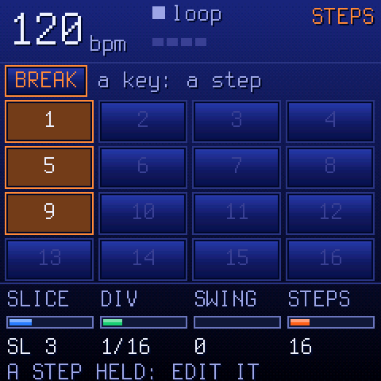
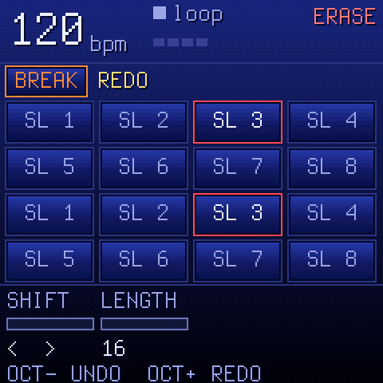
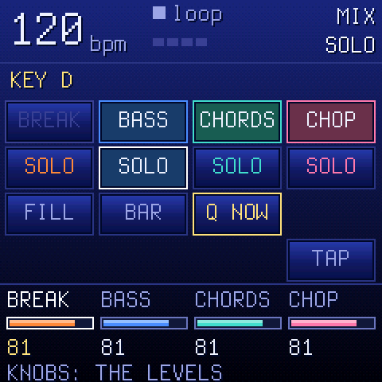
For a synth track (BASS, CHORDS, CHOP), tapping a function button opens its family of pages. Tapping it again (or SELECT) goes to the next page; HOME goes back. The page number shows in the header (e.g. FX 1/5).
| Button | Pages |
|---|---|
| ENV | ENV (attack, decay, sustain, release) · ENV DEST (filter, pitch, shape) |
| LFO | LFO (rate, wave, phase, fade) · LFO DEST (pitch, filter, shape, amp) |
| FX | FX (drive, chorus, delay, reverb sends) · FILTER (the track filter) · SLICER · DLY · REV/CHO |
| SEL | SEL (root, scale, quantise, chord) · SEL 2 (transpose, strum, voice leading) |
| EDIT | EDIT 1, EDIT 2 (the engine's own values) · VOICE · VOICE 2 · PRESETS · USER (save your own sound) · TOOLS (clear the pattern, init the sound) |
| GLO | GLOBAL (tempo, swing, click, tune) · MASTER (dust, duck, filter, the limiter's gain cut) · SYSTEM (MIDI, sync, input, USB) |
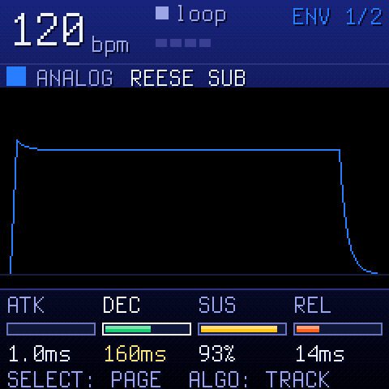
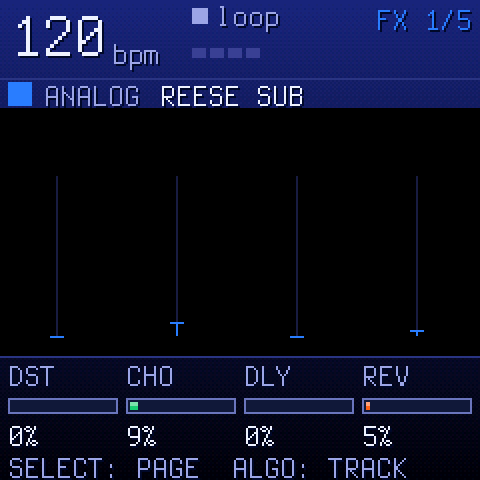
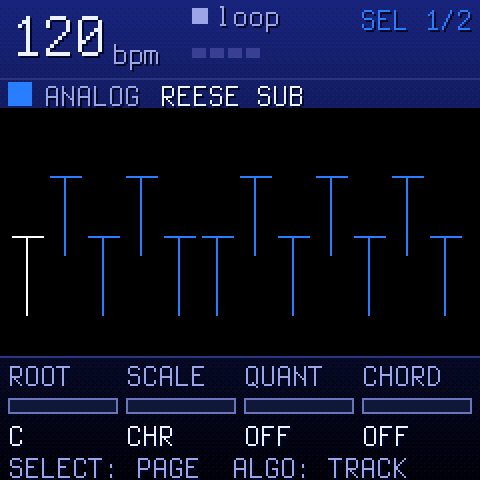
Tap SAVE anywhere in STUDIO (or in LIVE) to open the SONG screen on its SET page. SELECT turns the four pages; ALGORITHM picks the section shown on CHAIN, CARD and TRACKS.
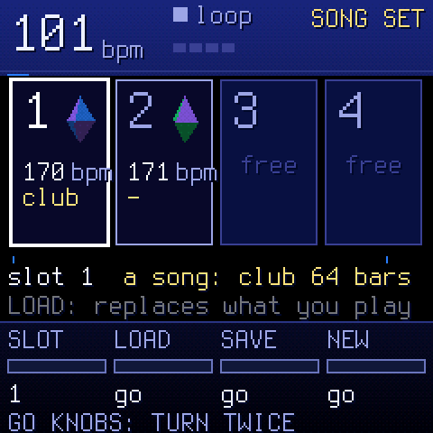
The four songs of the set (slot, tempo, form; the loaded one marked).
LOAD, SAVE over a song, and NEW act when you turn the knob twice, so you can't do it by accident. Saving into an empty slot acts at once. "SAVED" confirms the write.
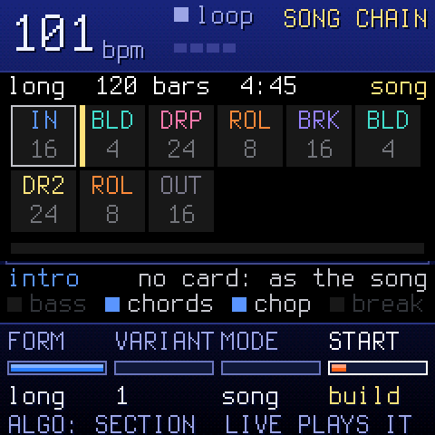
Your loop played as a whole track: a chip per section with its bars; the one playing lit. You make the song here and play it in LIVE; PLAY on this screen plays the loop.
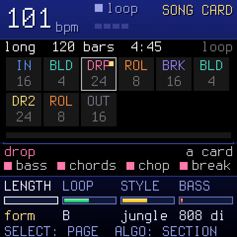
Each section is an editable card. An empty field means "as in the song", so a new card changes nothing; a filled field stands out. A card is heard the next time its section starts; a new LENGTH from the next PLAY.
KNOB 1–4 = BASS, CHORDS, CHOP, BREAK: ON, OFF or under water (low-passed and 12 dB down), or as the section's role says.
One web app for everything off the device. It has three parts:
The real FMX engine running in your browser (works in Safari and on iPhone too). Try FMX before installing, play the demo set, or hear your sounds before you send them. Computer keys: Z–' and Q–O are the 27 keys, 1–= the buttons FX…REC, [ ] OCT, ↑ ↓ SELECT, ← → ALGORITHM. Shift-click holds a button.
Install, update, and go back to stock (chapter 2).
Keep the FM-1 connected while the app writes; the device shows "POOL n: ADDED" when a sound lands.
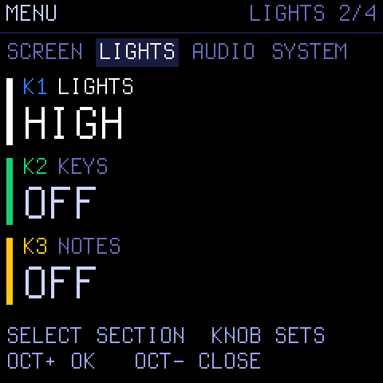
Hold HOME on any screen. SELECT picks the section, the knobs set the values, OCT+ opens an item, OCT− closes. PLAY still works. The menu closes back onto the screen you opened it from.
| Section | Items |
|---|---|
| SCREEN | COLOR (the palette), ZOOM |
| LIGHTS | LIGHTS: every button glows OFF / LOW / MID / HIGH, for the dark · KEYS: OFF, C KEYS, WHITE KEYS, ALL KEYS · NOTES: the notes playing light their keys |
| AUDIO | SPEAKER LOWCUT (for the built-in speaker) · USB AUDIO: follows MASTER, or FULL level · USB SERIAL (takes effect after a restart) |
| SYSTEM | HARDWARE CALIBRATION · 2ND CORE · ABOUT (version and credits) · LAST CRASH (report from the last crash, kept until power-off) |
If settings cannot be written, the screen says SETTINGS NOT SAVED.
On USB the FM-1 is also an audio input for your computer or phone (no driver). MIDI clock, MIDI in and the sequencer to MIDI out are set on the GLO → SYSTEM page (MIDI, SYNC, IN, USB).
| Problem | What to do |
|---|---|
| FM-1 won't start after an update | Hold OCT− while switching on (USB rescue) and install again from the companion app. |
| "EMPTY SECTION: REC" | The song has nothing recorded yet. Record a loop in STUDIO first. |
| "NO SONG: SAVE ONE FIRST" | There is no other song in the set. Save one in SONG → SET. |
| "NOT SAVED: AGAIN LOADS" | The song you have is edited and not saved. Press the same OCT again to load anyway, or save first. |
| "ON THE WAY: NEXT SONG" | A transition is playing; keys wait until it lands. |
| "READ ERROR" / "SAVE ERROR" | A flash read or write failed. The slot is not changed. Try again; back up your set. |
| Companion can't connect | Use Chrome, Edge or Firefox on a computer, or Chrome on Android. Safari and iOS have no Web MIDI. |
| Nothing changes when I press a section | It waits for Q (shown yellow). Set GLO to Q NOW for instant changes. |
Something else? Open LAST CRASH in the menu and include it when you report the bug.
| IN · BLD · DRP · ROL · BRK · DR2 · OUT | The sections: INTRO, BUILD, DROP, ROLL, BREAKDOWN, DROP 2, OUTRO. |
| AUTO / MAN | The song runs its chain by itself / the section loops until you choose. |
| Q | Quantise: when a change lands (NOW, BAR, 4 BARS). |
| Set | The four song slots LIVE plays through. |
| Card | A section's differences from its song (length, loop, style, bass, who plays). |
| FORM | The length of the whole song: SHORT 32, CLUB 64, LONG 128 bars. |
| VARIANT | Another arrangement (or phrase) from the same material. |
| MANGLE / ENERGY | How hard the BREAK generator cuts and rearranges. |
| Slice | One of the 8 pieces a break loop is cut into. |
| Pin | Fix a step's slice, or a chord, so the generator leaves it alone. |
| Under water | A track low-passed and 12 dB down. |
| LATCH | Make FX-panel tracks and effects stick without holding. |
| Pool | The shared memory for your own sounds (320 KB). |
| Yellow | Waiting for the boundary. |
| SCALE · QUANT · CHORD | Key and scale settings (SEL). |
| CMPLX · ANCHR · RETRIG | Complexity (how far the generator strays from the loop), anchor (how strongly slices stay tied to their place in the beat), stutter chance. |
FMX is GPL-3.0-only, with full source, and comes with no warranty. Based on SLOOP by isod89 and Felucca by Leo Kuroshita, Hügelton Instruments; the BREAK generator after X0X by charlesvestal. Built-in breaks: OaSyntax's "Jungle Breaks" (Freesound, CC BY 3.0). Terminus font by Dimitar Toshkov Zhekov (SIL OFL 1.1). Full attributions are on the device's ABOUT page and in LICENSING.md.
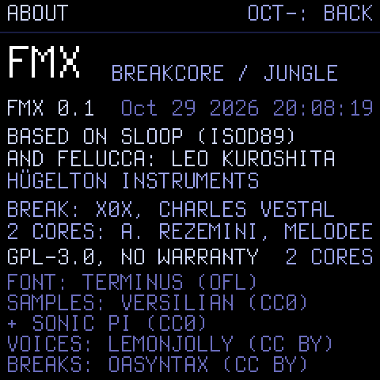